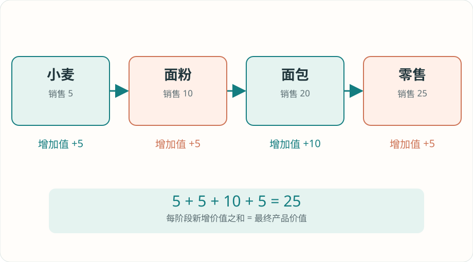
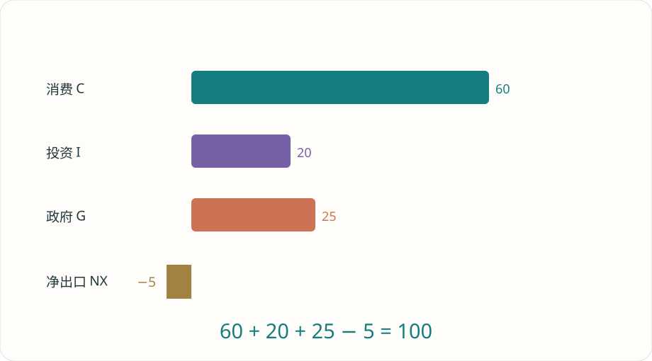

国民收入核算
为什么一份小麦、一袋面粉和一条面包不能把售价全部相加？用生产、支出和收入三条路线审视 GDP。
GDP 在衡量什么，为什么只算最终生产？
国内生产总值（GDP）是经济体在一定时期内境内生产的最终商品和服务的价值。它是流量，不是国民财富存量；按照生产发生地，而不是所有者国籍归属。市场价格为不同商品建立共同计价单位，但不代表 GDP 能完整衡量福利。
若面粉厂把 10 元面粉卖给面包房，面包房又把制成的面包卖出 20 元，直接算 10+20 就把面粉已经包含在面包中的价值计算了两次。正确方法是最终产品法或逐环节增加值法。
生产法：给面包的每个环节算增加值
一个完全人为构造的案例：农民卖小麦 5 元、磨坊卖面粉 10 元、面包房出厂售价 20 元、商店最终售价 25 元。为方便教学，假设没有其他中间投入、相关产出均在同一统计期。四步增加值是 5、5、10、5。

支出法：最终使用者购买了什么
按支出分组，C 是家庭消费，I 是实物资本形成及存货变动，G 是政府商品与服务购买，X−M 是净出口。购买股票债券不属于 GDP 中的实物投资 I，养老金等纯粹转移支付本身也不是 G；进口需要从按使用方分类的总支出中扣除，以还原境内生产。

试着平衡支出账户
把净出口设为负数，可以观察到总和变化。
收入法：产出最终分配给谁
一次生产对应雇员薪酬、经营盈余、固定资本消耗及生产和进口税净额等收入或成本项目，详细分类取决于国民账户体系。不能把企业营业额和劳动者工资简单相加：工资已经是收入法对增加值的一种分解。
生产、支出与收入三法在概念上观察同一生产活动，实际统计结果并非每期完全一致。例如美国 BEA 独立核算 GDP 与 GDI，承认不同来源及时间修订导致的统计差异（statistical discrepancy），这是统计实施问题而非逻辑矛盾。
名义 GDP、实际 GDP 与链式指数
若去年生产 100 件商品，每件价格 10 元，今年仍生产 100 件但价格 12 元，名义 GDP 从 1000 增到 1200，产量却没有增长。实际 GDP 的目的是剔除价格变动，尽可能观察数量变化。
真实统计常采用链式数量指数（chain-type quantity index）；链式实际 GDP 各组成项目在参考年以外通常不可直接加总。如果希望算消费、投资对增长的贡献，应查发布机构给出的专门增长贡献数据，而不是把链式金额当作普通固定价格加法。
来源与延伸阅读
以下资料用于核对经济学定义与制度口径。文章中的数字化教学模型均非实际宏观统计。